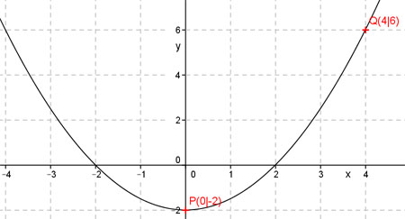

Aufgabe 23 Eine Parabel hat ihren Scheitelpunkt in P(0|-2) und geht durch Q(4|6). Wie lautet ihre Funktionsgleichung? Scheitelpunkt in P(0|-2) bedeutet, es muss eine Parabel der Form y = ax2 - 2 sein, die symmetrisch zur y-Achse liegt. Punkt (4|6) bedeutet, x = 4 und y = 6. In y = ax2 - 2 eingesetzt: 6 = a * (4)2 - 2 |+2 8 = 16a | :16 a = 0,5 y = 0,5x2 - 2 